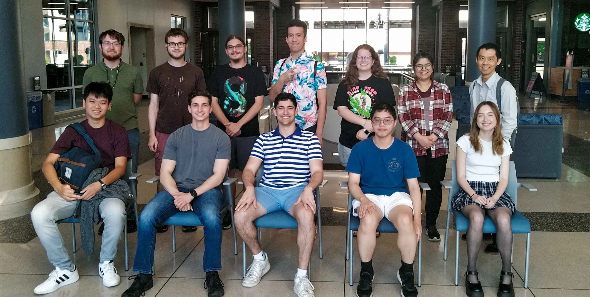

Meet the team!
Our team comes from a wide variety of backgrounds, including the Purdue Colleges of Engineering, Science, Liberal Arts, Management, and more. We have a mix of Purdue professors, graduate students, and undergraduate students leading our projects and research efforts.
Learn more